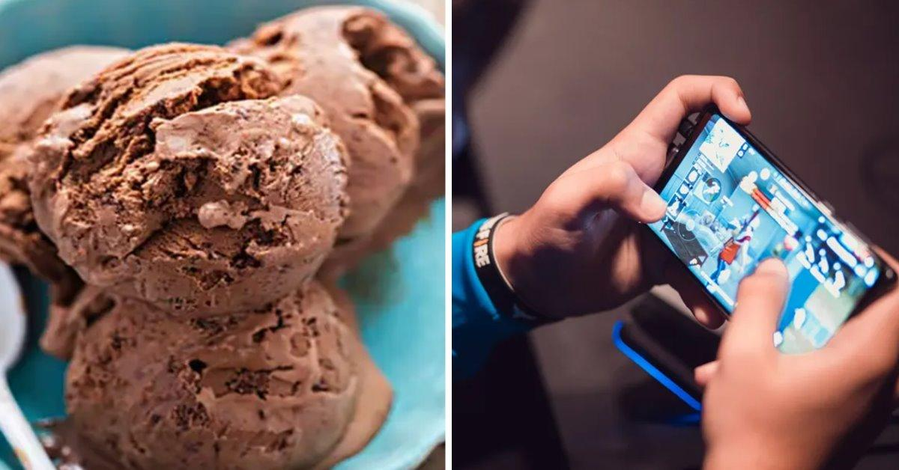
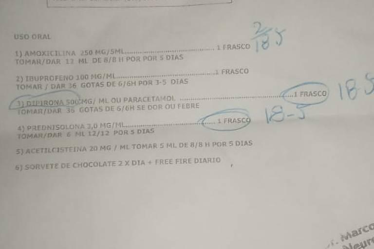

<!DOCTYPE html>
<html lang="en">
<head>
    <meta charset="UTF-8">
    <meta http-equiv="X-UA-Compatible" content="IE=edge">
    <meta name="viewport" content="width=device-width, initial-scale=1.0">
    <title>Document</title>
</head>
<body>


</body>
</html>


<h1></h1> NOTICIAS HOJE FREE FIRE <ABAIXO></ABAIXO>


<H1></H1>Médico receita Free Fire e Sorvete a criança doente Prefeito elogia atendimento





<h1></h1>O médico Marcos Wesley Silva, que inicialmente foi demitido depois de prescrever sorvetede chocolate duas vezes por dia e jogo Free Fire diário para um menino de 9 anos que
tinha inflamação na garganta e sintomas gripais, foi recontratado e elogiado pelo prefeito
de Osasco.


<h1></h1>O caso ganhou repercussão e levantou discussão se o atendimento foi humanizado ou
debochado. Além de suscitar a eterna dúvida se alimentos gelados fazem bem ou não para
o tratamento de dor de garganta.


<h1></h1>O CDC (Centro de Controle e Prevenção de Doenças dos EUA) informa que chupar cubos
de gelo, picolés e pastilhas é uma medida para diminuir a dor de garganta. O NHS, serviço
de saúde pública do Reino Unido, também fornece uma orientação semelhante.


<h1></h1>Embora o atendimento prestado pelo profissional é alvo de uma investigação do Cremesp (Conselho Regional de Medicina do Estado de
São Paulo), o prefeito Rogério Lins decidiu recontratar o médico nesta quarta-feira (31), de acordo com a Prefeitura de Osasco. O prefeito
viu a atitude do médico como humanizada.


<h1></h1>“Na receita há a prescrição de toda a medicação necessária ao paciente. Quando ele coloca o sorvete e o jogo, ele quis
humanizar o atendimento.”


<h1></h1>A mãe da criança, Priscila da Silva Ramos, 37, afirmou que a prefeitura olhou apenas para a receita e não para o atendimento. “Só levaram
em conta a parte da receita, mas não viram a parte que o médico não examinou meu filho, só prescreveu um monte de medicamentos”,
afirmou


<h1></h1>Ela disse que está sendo criticada por ter exposto o caso.

<h1></h1>“Ele está saindo como certo e eu errada. A situação ficou pior para o meu lado, não foi o dele. O meu ficou muito ruim porque
estão dizendo que eu estou querendo ibope, mas não é isso. Tanto que eu não quis aparecer em nenhuma imagem.”

<h1></h1>A mãe da criança afirmou que apenas quis expor uma situação que ela afirmou ser recorrente.

 <h1></h1>“Minha intenção era mostrar o caos da saúde aqui em Osasco, onde eles [médicos] não
 olham na sua cara, não examinam, debocham. Várias pessoas vieram falar comigo que
 passaram pela mesma situação de descaso”, explicou.


 <h1></h1>ENTENDA O CASO
 


<h1></h1>fontes the radioativo 


